Web accessible - points de contrôle rapides
Présentation - Web accessible - points de contrôle rapides
Slide 1 sur 30 - Partie III - Web accessible - TP
Slide 1 - Partie III - Web accessible - TP
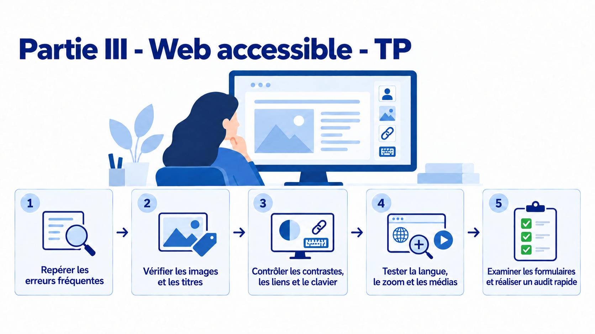
Partie III - Web accessible - TP
Partie III | Plan
- Repérer les erreurs fréquentes
- Vérifier les images et les titres
- Contrôler les contrastes, les liens et le clavier
- Tester la langue, le zoom et les médias
- Examiner les formulaires et réaliser un audit rapide
Annoncer les cinq thèmes qui structurent la partie III consacrée au Web. Préciser que les points de contrôle rapides permettent de repérer les principaux signaux d’alerte avant un audit approfondi. À la fin de la partie : mission d’audit groupé sur une page de votre choix.
Slide 2 - WebAIM Million 2026 : le constat
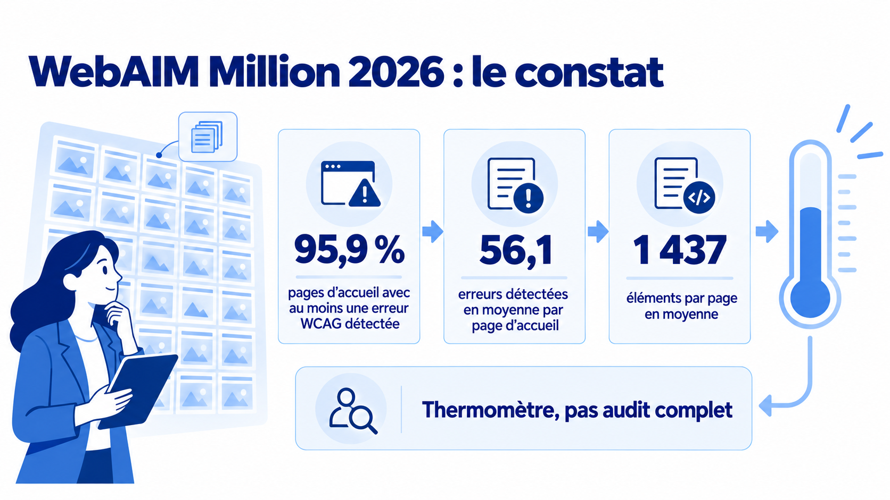
WebAIM Million 2026 : le constat
3. points de contrôle rapides | WebAIM Million 2026
- 95,9 % des pages d’accueil ont au moins une erreur WCAG détectée
- 56,1 erreurs détectées en moyenne par page d’accueil
- 1 437 éléments par page en moyenne : la complexité augmente
Comment lire ces chiffres
- WebAIM analyse automatiquement les pages d’accueil : c’est un thermomètre, pas un audit RGAA complet.
- L’absence d’erreur détectée ne prouve pas qu’une page est accessible.
- Mais la présence d’erreurs détectées révèle des barrières très probables pour les utilisateurs.
Source : The WebAIM Million, mise à jour 2026, https://webaim.org/projects/million/. WebAIM a évalué les pages d’accueil des 1 000 000 de sites web les plus visités avec l’API WAVE autonome et des outils complémentaires de collecte technique. Résultats publiés à partir de données de février 2026 et dernière mise à jour indiquée au 30 mars 2026. Expliquer la limite méthodologique : WAVE détecte des erreurs probables et utiles à repérer, mais un résultat automatisé ne remplace pas un audit RGAA complet. Message pédagogique : l’objectif n’est pas de faire peur, mais de rendre visible un problème massif et mesurable. La slide suivante montre pourquoi les points de contrôle rapides sont un bon premier filtre.
Slide 3 - Six erreurs qui justifient les points de contrôle rapides
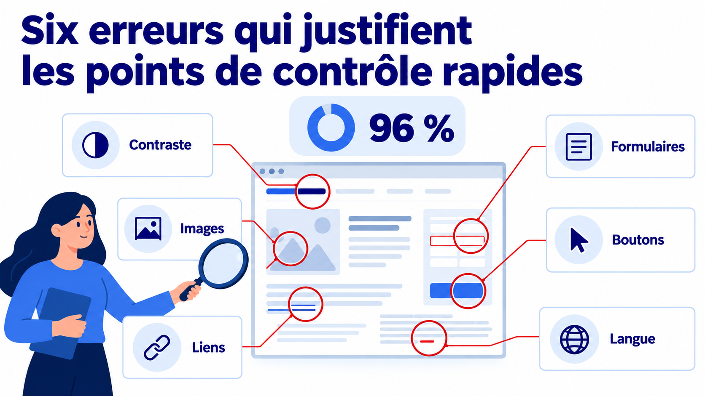
Six erreurs qui justifient les points de contrôle rapides
3. points de contrôle rapides | WebAIM Million 2026
| Erreur fréquente | Pages concernées | Point d’entrée |
|---|---|---|
| Texte à faible contraste | 83,9 % | Contraste |
| Texte alternatif d’image manquant | 53,1 % | Images |
| Étiquette de formulaire manquante | 51 % | Formulaires |
| Liens vides | 46,3 % | Images / clavier (partiel) |
| Boutons vides | 30,6 % | Clavier / formulaires (partiel) |
| Langue du document absente | 13,5 % | Langue |
À retenir
- Ces six familles représentent 96 % des erreurs détectées par WebAIM.
- Les points de contrôle rapides donnent une méthode courte pour les repérer sans audit complet.
Source : The WebAIM Million, mise à jour 2026, https://webaim.org/projects/million/. Les pourcentages indiquent la part des pages d’accueil concernées par chaque type d’erreur. Faire le lien avec le programme : les stagiaires vont maintenant apprendre à repérer ces familles par des gestes simples - contraste, images, titres, clavier, langue, formulaires. Préciser que les liens et boutons vides ne sont pas un Point de contrôle rapide autonome dans ce module, mais qu’ils ressortent souvent via les tests images, clavier et formulaires. Insister sur la logique de pré-diagnostic : on ne remplace pas l’audit RGAA, on sait mieux quoi remonter.
Slide 4 - Texte alternatif : 4 types d’images, 4 décisions
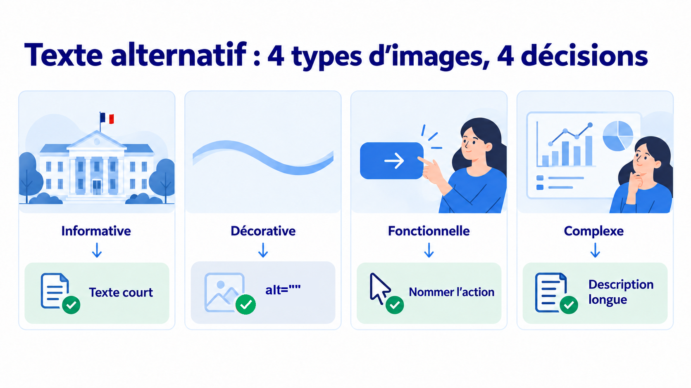
Texte alternatif : 4 types d’images, 4 décisions
3. points de contrôle rapides | 1. Texte alternatif des images
Le texte alternatif est le sous-titre de l’image - sans lui, une partie du message devient muette.
- Informative - Apporte une info : photo d’un bâtiment, graphique. → texte alternatif court.
- Décorative - Pure ambiance : séparateur, icône floue. →
alt=""(vide). - Fonctionnelle - Dans un lien ou un bouton : logo cliquable, picto. → nommer l’action attendue.
- Complexe - Diagramme, schéma, infographie. → texte court + description longue à part.
Faire deviner : « Cette carte de métro, quel type ? » (complexe). Insister sur le décoratif - c’est le plus mal compris. Un séparateur graphique avec alt="ligne bleue" pollue le lecteur d’écran. Règle mnémo : si je retire l’image, est-ce que je perds une info ? Si non → alt vide.
Slide 5 - Rédiger un texte alternatif qui sert vraiment
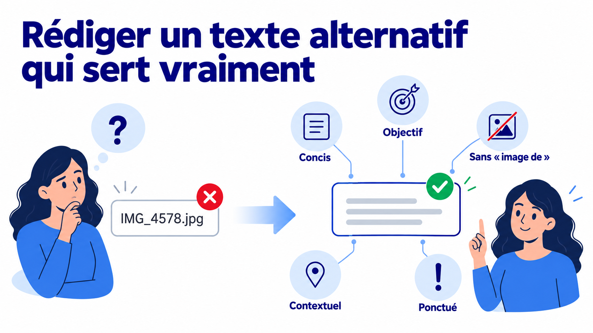
Rédiger un texte alternatif qui sert vraiment
3. points de contrôle rapides | 1. Texte alternatif des images
5 règles pour un texte alternatif utile :
- Concis : une phrase courte, centrée sur l’information utile
- Objectif : décrit, ne commente pas
- Pas de « photo de » ni « image de » - le lecteur d’écran le dit déjà
- Contextuel : ce qui compte dans cette page, pas tout ce qui est visible
- Ponctué : point final, pour que le lecteur marque la pause
Piège fréquent
- Un nom de fichier (IMG_4578.jpg) en guise de texte alternatif = information perdue
- Un texte alternatif qui décrit la décoration au lieu du contenu utile
Prédiction avant de montrer les 5 règles : « Qu’est-ce qui rend un texte alternatif vraiment utile ? » La bonne réponse n’est pas une longueur magique : c’est le contexte. Exemple live : une photo du ministère avec alt="photo du ministère de Bercy prise en 2023" → refactorer en "Ministère de Bercy, façade ouest." - même info, moitié de caractères.
Slide 6 - Texte alternatif : passe ou échoue ?
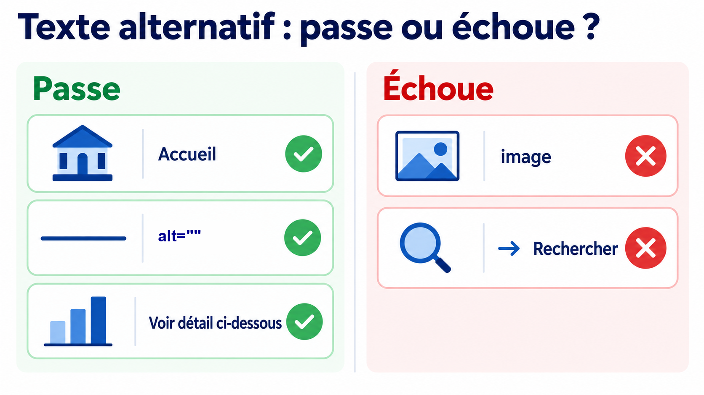
Texte alternatif : passe ou échoue ?
3. points de contrôle rapides | 1. Texte alternatif des images
| Image | Alt proposé | Verdict |
|---|---|---|
| Logo ministère dans l’en-tête (lien vers l’accueil) | alt="Ministère de l’Économie - Accueil" | OK - fonctionnelle, action nommée |
| Photo d’illustration d’un article sur la fraude | alt="image" | KO - aucune information |
| Séparateur graphique entre deux sections | alt="" | OK - décorative, alt vide |
| Graphique de répartition budgétaire | alt="graphique montrant la répartition du budget 2026, voir détail ci-dessous" | OK - alt court + renvoi au détail |
| Icône loupe dans un bouton de recherche | alt="loupe" | KO - décrit l’image, pas l’action (devrait être « Rechercher ») |
Masquer la colonne verdict et demander à voter pour chaque ligne. Débrief rapide après chaque cas : pourquoi KO ? que rédiger à la place ? Ligne 5 (loupe) est le piège le plus commun : on décrit ce qu’on voit, pas ce que l’utilisateur fera en cliquant.
Slide 7 - Titre de page : l’étiquette qui oriente
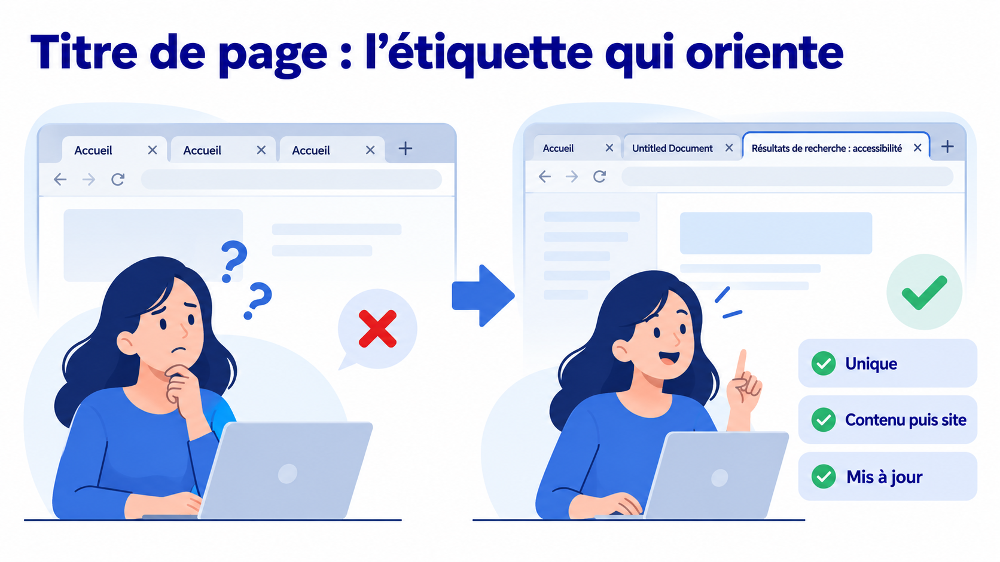
Titre de page : l’étiquette qui oriente
3. points de contrôle rapides | 2. Titre de page
Le titre de page est la 1ʳᵉ chose que lit un lecteur d’écran et la seule chose visible dans l’onglet.
Ce qu’il faut vérifier :
- Chaque page a un titre unique, différent des autres pages du site
- Le titre décrit le contenu puis le nom du site (« Déclarer - impots.gouv.fr »)
- Il change quand le contenu principal change (recherche, étape de formulaire)
Exemples
- OK : « Résultats de recherche : accessibilité - Ministère de la Culture »
- KO : « Accueil » sur chaque page du site
- KO : « Untitled Document » (oubli fréquent sur les PDF)
Démo live : ouvrir 3 onglets de sites publics, demander lequel est identifiable juste à l’étiquette. Piège des CMS : beaucoup héritent du titre du template - toutes les pages « Accueil ». Outil : survoler l’onglet dans le navigateur ou regarder la balise <title>.
Slide 8 - Titres : la hiérarchie qui structure
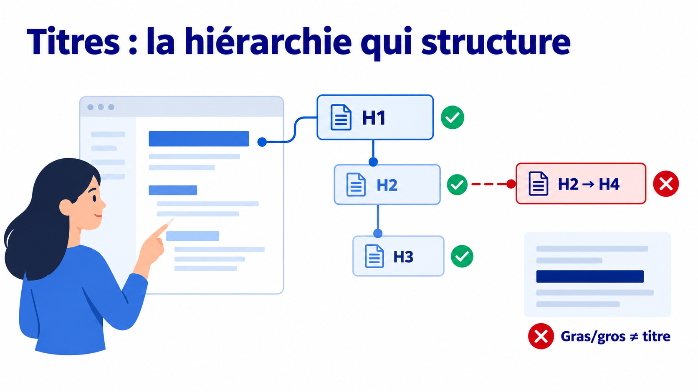
Titres : la hiérarchie qui structure
3. points de contrôle rapides | 3. Titres et hiérarchie
Un utilisateur de lecteur d’écran navigue de titre en titre comme on navigue dans une table des matières.
3 règles qui font passer le check :
- Un seul H1 par page, qui reprend le sujet principal
- Les niveaux s’emboîtent sans saut : H1 → H2 → H3, jamais H2 → H4
- Un titre n’est pas une simple mise en forme gras/gros - c’est une balise
<h1>à<h6>
Analogie : un document Word où tout le texte est en gras 18 pt n’a pas de plan. Même principe sur le web. Prédire : « Quel est le saut de hiérarchie le plus fréquent ? » (H2 → H4, parce que H3 « n’est pas assez joli »). Outil : l’extension HeadingsMap pour Chrome / Firefox affiche l’arbre des titres en un clic.
Slide 9 - Titres : 3 façons de vérifier
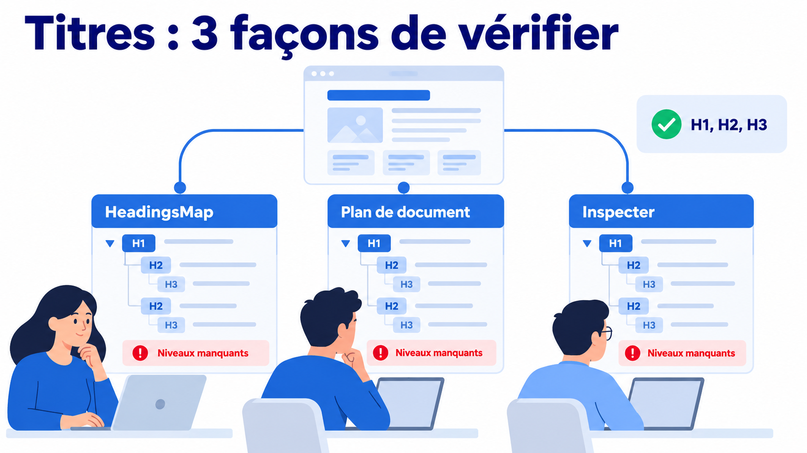
Titres : 3 façons de vérifier
3. points de contrôle rapides | 3. Titres et hiérarchie
| Méthode | Comment faire | Ce que vous cherchez |
|---|---|---|
| Extension HeadingsMap | Installer l’extension, ouvrir le panneau latéral. | L’arbre complet des titres s’affiche, les anomalies en rouge. |
| Plan de document | Extension Web Developer → Information → View Document Outline. | Le plan liste les titres réels et signale les niveaux manquants. |
| Clic droit « Inspecter » | Rechercher h1, h2, h3 dans l’onglet Éléments. | Un seul <h1>, pas de saut, pas de titre factice (<div class="titre">). |
Démo HeadingsMap sur legifrance.gouv.fr ou service-public.fr. Engagement (R24) : chaque stagiaire teste sa page d’accueil personnelle ou professionnelle ce soir et note le nombre de H1 détectés - idéalement 1, souvent 0 ou 3.
Slide 10 - Contraste : un seuil chiffré, pas une opinion
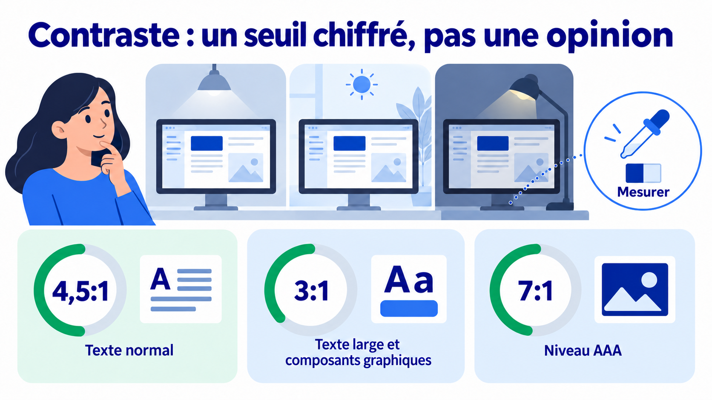
Contraste : un seuil chiffré, pas une opinion
3. points de contrôle rapides | 4. Contraste des couleurs
Ce que vous trouvez « joli gris » peut devenir illisible selon l’écran, la lumière ou la vision de l’utilisateur.
- 4,5:1 - Texte normal (sous 18 pt)
- 3:1 - Texte large (18 pt+ ou 14 pt gras) et composants graphiques
- 7:1 - Niveau AAA - recommandé pour texte dense
Ce qui compte :
- Le rapport entre la couleur du texte et celle du fond (ou l’arrière-plan visible)
- Sur un dégradé ou une image, mesurer à l’endroit le moins contrasté
- Ne pas se fier seulement à l’œil - mesurer avec un outil
Analogie : lire un SMS à 3 h du matin sur un écran en plein soleil - c’est ce que vit un malvoyant en permanence avec un contraste trop faible. Rappeler : le contraste fait partie des défauts les plus fréquents dans les observations WebAIM Million.
Slide 11 - Contraste : 3 outils à avoir sous la main
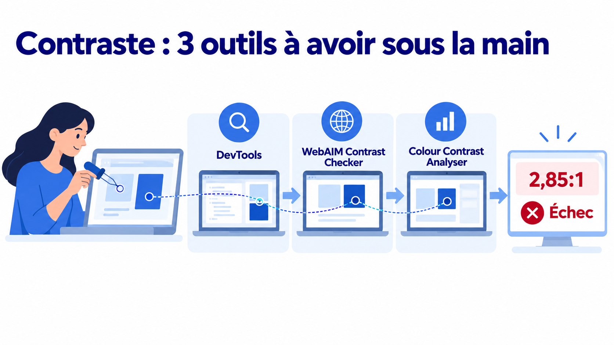
Contraste : 3 outils à avoir sous la main
3. points de contrôle rapides | 4. Contraste des couleurs
| Outil | Usage | Quand l’utiliser |
|---|---|---|
| DevTools Chrome / Firefox | Clic droit sur un texte → Inspecter → pastille de couleur. | Mesure ponctuelle pendant la rédaction ou la relecture. |
| WebAIM Contrast Checker | webaim.org/resources/contrastchecker - coller les deux couleurs hex. | Avant de choisir une charte graphique ou un thème. |
| Colour Contrast Analyser (CCA) | App desktop - pipette qui mesure n’importe quelle zone d’écran. | Tester des maquettes Figma, des captures d’écran, des PDF. |
Piège classique
- Texte gris clair sur fond blanc (#999 sur #FFF) : 2,85:1 - échec même en texte large
- Bouton bleu avec texte bleu marine « moderne » : souvent sous le seuil
Démo live : prendre la page d’accueil de Bercy et mesurer 3 textes au hasard. Laisser les stagiaires deviner avant la mesure. Engagement (R24) : choisissez votre outil préféré d’ici la fin de la session et testez 5 couleurs de votre charte dans la semaine.
Slide 12 - Lien d’évitement : le raccourci vers le contenu
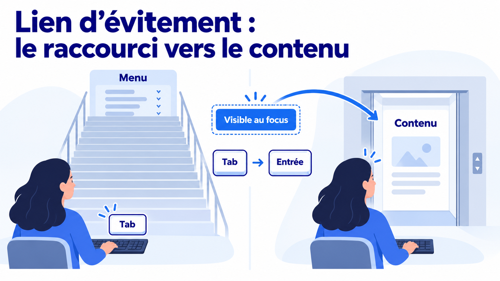
Lien d’évitement : le raccourci vers le contenu
3. points de contrôle rapides | 5. Lien d'évitement
Sans lien d’évitement, un utilisateur clavier doit souvent traverser tout le menu avant d’atteindre le contenu.
Ce qu’il faut vérifier :
- Le premier lien interactif permet d’aller directement au contenu principal
- Il devient visible dès qu’il a le focus, même s’il était masqué
- Il mène au bloc principal via une ancre (#contenu, #main)
Démo en 3 Tab
- Ouvrez gouvernement.fr et appuyez Tab : le lien « Contenu » apparaît en haut
- Entrée → vous voilà au contenu, menu contourné
Analogie : l’ascenseur dans un immeuble. Sans ascenseur, chacun monte les 10 étages à pied - y compris les personnes qui ne peuvent pas. Faire deviner : combien de tabulations sur la page de leur intranet pour arriver au contenu ? Rappel : le lien d’évitement peut être masqué visuellement mais doit apparaître au focus clavier.
Slide 13 - Naviguer sans souris : le test qui change tout
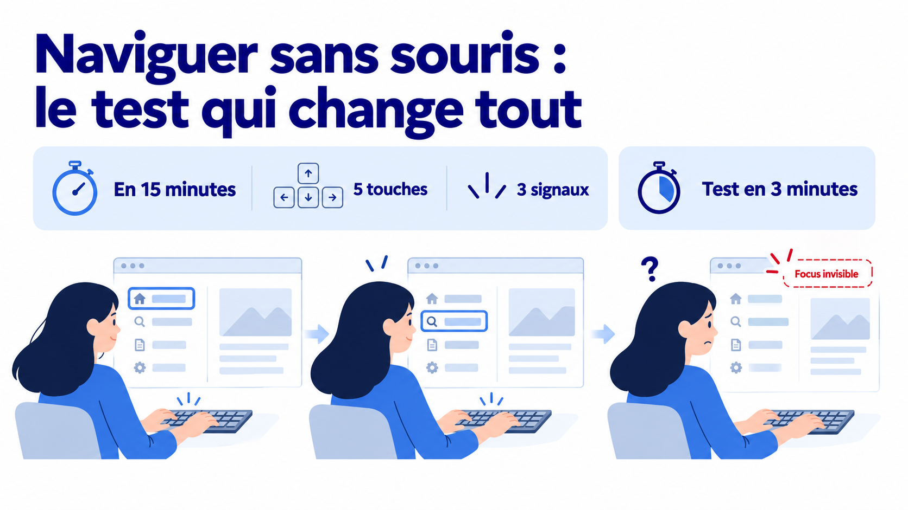
Naviguer sans souris : le test qui change tout
3. points de contrôle rapides | 6. Focus et navigation clavier
Quand on navigue au clavier, un focus invisible suffit à perdre toute la page.
En 15 minutes, vous saurez :
- Utiliser 5 touches pour tester n’importe quelle page
- Repérer 3 signaux qui trahissent un défaut d’accessibilité
- Reproduire l’expérience d’un lecteur d’écran en 3 minutes
Annoncer le rattachement : cette séquence correspond au point de contrôle rapide n° 6 du W3C, focus et navigation clavier : visibilité du focus, parcours, activation et absence de piège (tabulation, activation, lecture). Corpus de référence local : 03-easy-checks/w3c-easy-checks-fr.md. Ouvrir par une question : « Posez la main loin de la souris. Combien de temps tenez-vous sur votre site préféré ? » Laisser 10 secondes de silence. Analogie : le clavier est le GPS de votre site - s’il ne s’allume pas, personne ne trouve la route. Objectif : transformer le regard des stagiaires. Après cette slide, ils ne regarderont plus une page comme avant.
Slide 14 - 5 touches, 3 intentions
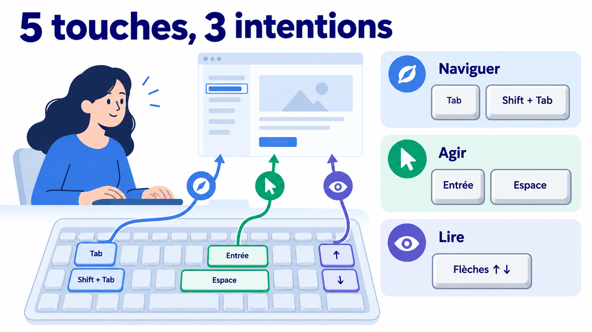
5 touches, 3 intentions
3. points de contrôle rapides | 6. Focus et navigation clavier
Naviguer → Tab / Shift+Tab Agir → Entrée / Espace Lire → Flèches ↑ ↓
| Touche | À quoi elle sert | Ce qu’il faut vérifier |
|---|---|---|
| Tab | Avancer sur l’élément interactif suivant (lien, bouton, champ). | Le focus se déplace et reste visible à chaque étape. |
| Shift + Tab | Reculer sur l’élément interactif précédent. | L’ordre inverse est logique, sans saut imprévu. |
| Entrée | Activer un lien ou soumettre un formulaire. | L’action attendue se déclenche immédiatement. |
| Barre d’espace | Cocher, décocher, sélectionner un bouton radio. | L’état coché / non coché est annoncé vocalement. |
| Flèches ↑ ↓ | Lire le contenu ligne par ligne avec un lecteur d’écran. | Le texte alternatif des images est lu à haute voix. |
Faire deviner avant de révéler la 3e colonne (R11) : « Devinez ce qui doit se passer quand j’appuie sur Tab ». Insister sur l’indicateur de focus visible - c’est LE critère qui tombe en premier. Piège fréquent : un site qui n’annonce jamais l’état d’une case à cocher (ligne Espace).
Slide 15 - 3 signaux qui trahissent un défaut
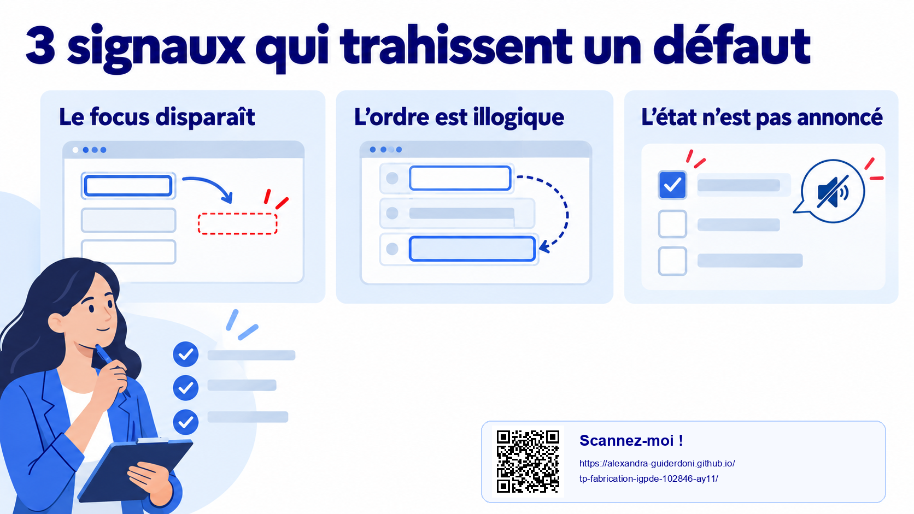
3 signaux qui trahissent un défaut
3. points de contrôle rapides | 6. Focus et navigation clavier
- Le focus disparaît - Plus de contour visible pendant la tabulation. L’utilisateur est perdu dès la 3ᵉ touche Tab.
- L’ordre est illogique - Le focus saute à droite avant le menu à gauche. Le lecteur d’écran parcourt la page dans le désordre.
- L’état n’est pas annoncé - Une case qui coche sans dire « coché ». L’information est invisible pour qui ne voit pas l’écran.
Scannez-moi !
https://alexandra-guiderdoni.github.io/tp-fabrication-igpde-102846-ay11/
Avant de révéler les 3 cartes, demander : « Quel est le signal qui vous semble le plus grave ? » Laisser parler 2 stagiaires. Rappel rassurant (R18) : détecter un de ces signaux ne sert pas à désigner un coupable, mais à prouver qu’un test clavier doit entrer dans la routine de publication. Faire ouvrir le site d’entraînement : https://alexandra-guiderdoni.github.io/tp-fabrication-igpde-102846-ay11/
Slide 16 - Votre mission
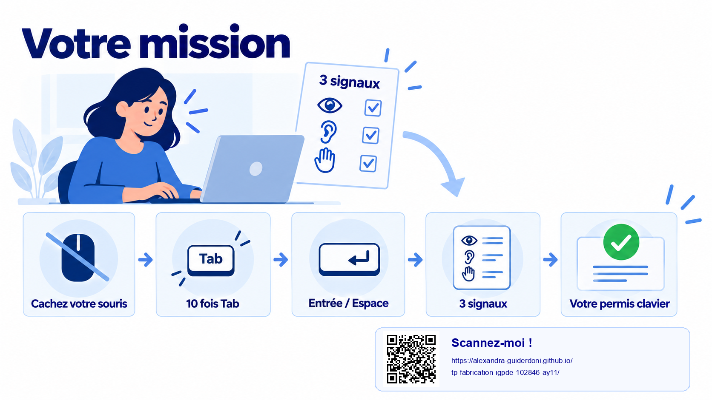
Votre mission
3. points de contrôle rapides | 6. Focus et navigation clavier
Site d’entraînement :
- Cachez votre souris derrière l’écran
- Tabulez 10 fois et notez chaque fois que le focus disparaît
- Essayez Entrée sur un bouton, Espace sur une case à cocher
- Listez les pièges détectés et associez-les aux 3 signaux
Objectif : votre permis clavier
- 1 signal détecté = vous avez l’œil
- 3 signaux détectés = vous êtes auditeur clavier
Scannez-moi !
https://alexandra-guiderdoni.github.io/tp-fabrication-igpde-102846-ay11/
Distribuer l’URL du site d’entraînement (fabriqué en interne, avec pièges volontaires). Chronométrer 5 minutes. Débriefer en collectif : quel signal a été le plus difficile à repérer ? pourquoi ? Clore le module avec la question métacognitive (R25) : « Qu’est-ce qui vous aurait aidé à repérer plus vite ? » Engagement : chaque stagiaire annonce ce qu’il testera dès demain sur son propre site.
Slide 17 - Langue de la page : l’accent juste du lecteur d’écran
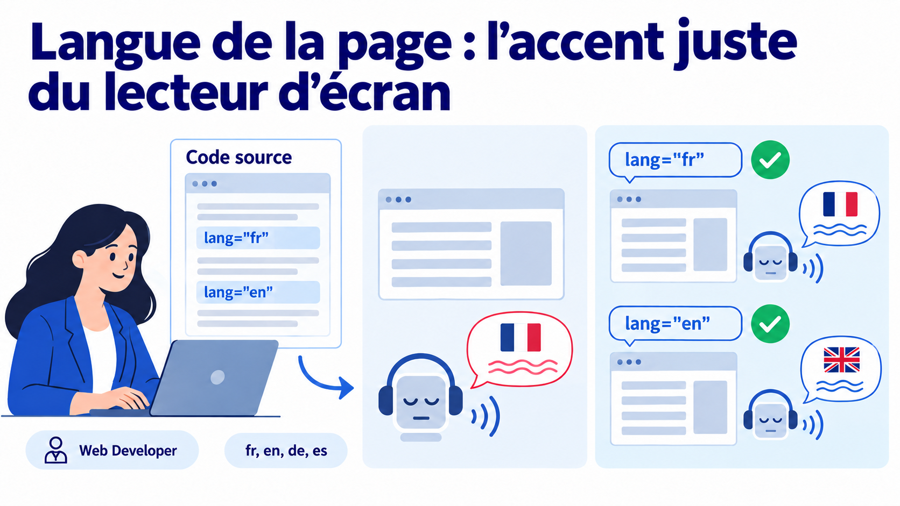
Langue de la page : l’accent juste du lecteur d’écran
3. points de contrôle rapides | 7. Langue de la page
Sans langue déclarée, le lecteur d’écran peut choisir une mauvaise prononciation et rendre le texte pénible à écouter.
Ce qu’il faut vérifier :
- La balise
<html>porte un attributlang(ex.lang="fr") - Les passages dans une autre langue sont balisés :
<span lang="en">workshop</span> - Le code langue suit la norme ISO 639 : fr, en, de, es - pas « français »
Comment vérifier sans coder
- Clic droit → Afficher le code source → regarder la 1ʳᵉ ligne
<html lang="…"> - Ou extension « Web Developer » → Information → View Document Language
Démo : activer VoiceOver ou NVDA sur une page sans lang et comparer la prononciation. Analogie : un comédien à qui on ne dit pas dans quelle langue jouer - il bute sur chaque mot. Piège : un gabarit peut être visuellement français tout en oubliant lang="fr" dans le code.
Slide 18 - Zoom à 200 % : tout doit rester lisible
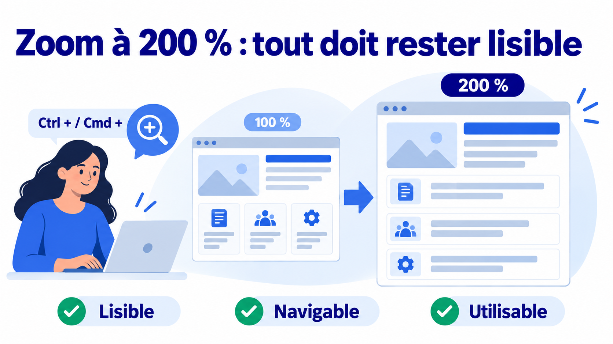
Zoom à 200 % : tout doit rester lisible
3. points de contrôle rapides | 8. Zoom à 200 %
À 200 %, votre site doit rester le même service : lisible, navigable et utilisable.
Ce qu’il faut vérifier :
- À 200 % de zoom, aucun texte n’est coupé ni superposé
- Pas d’apparition d’un défilement horizontal sur une page classique
- Les menus, boutons et formulaires restent utilisables, pas seulement visibles
Comment tester
- Ctrl + (ou Cmd + sur Mac) pour zoomer jusqu’à 200 % - répéter 4 fois depuis 100 %
- Parcourir la page : formulaire, menu, pied de page. Si ça casse, le check échoue
Analogie : zoomer, c’est mettre des lunettes. Votre site doit rester opérationnel avec les lunettes. Test immédiat : demander à 2 stagiaires de zoomer à 200 % sur leur intranet et de tenter de remplir un formulaire. Souvent, un champ ou un bouton devient inaccessible. Ne pas confondre zoom navigateur (OK) et zoom tactile (mobile) - les deux doivent fonctionner.
Slide 19 - Sous-titres : le son que tout le monde lit
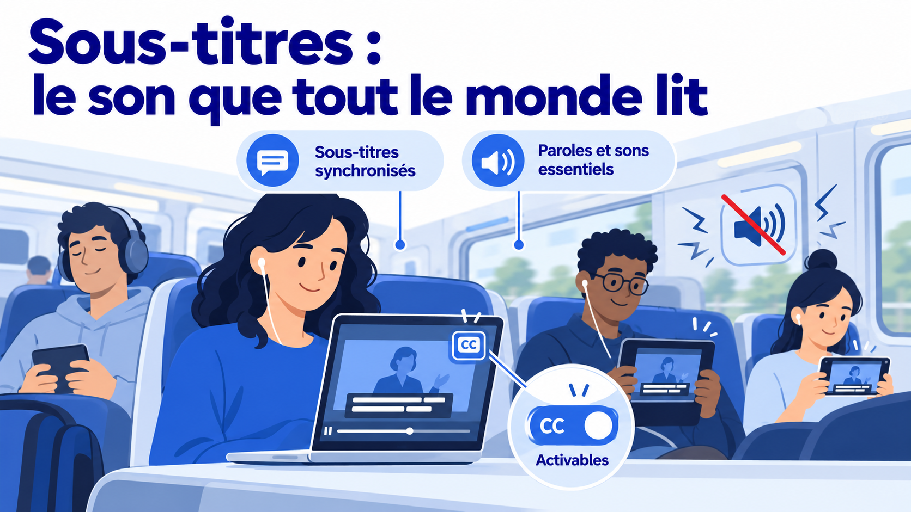
Sous-titres : le son que tout le monde lit
3. points de contrôle rapides | 9. Sous-titres vidéo
Une vidéo sans sous-titres devient inutilisable dès que le son manque, est coupé ou ne peut pas être entendu.
Ce qu’il faut vérifier :
- La vidéo propose des sous-titres synchronisés (pas seulement une transcription)
- Les sous-titres incluent les paroles ET les informations sonores importantes : « (rires) », « (sonnerie) »
- Ils sont activables/désactivables par l’utilisateur (bouton CC)
Analogie : dans un train bruyant, même un entendant lit les sous-titres. Bénéficiaires (faire deviner) : personnes sourdes ou malentendantes, utilisateurs en open space, apprenants d’une langue étrangère, personnes qui préfèrent lire. Nuance capitale : une transcription écrite sur la page n’est pas un sous-titre - les deux sont utiles, pas interchangeables.
Slide 20 - Sous-titres auto : brouillon utile, livrable à relire
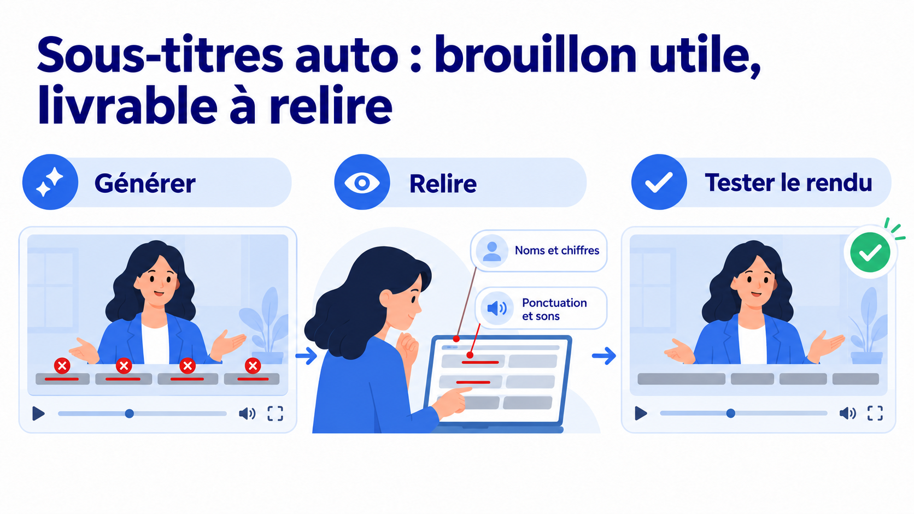
Sous-titres auto : brouillon utile, livrable à relire
3. points de contrôle rapides | 9. Sous-titres vidéo
Pourquoi l’auto ne suffit pas :
- Les sous-titres automatiques peuvent déformer les mots, surtout les noms propres et acronymes
- Noms propres, acronymes, chiffres : souvent mal reconnus
- Ponctuation absente : « on mange les enfants » vs « on mange, les enfants »
- Pas d’indication sonore non verbale (musique, applaudissements)
Méthode recommandée
- Générer l’auto (YouTube, Whisper, outil interne) pour accélérer le brouillon
- Relire : noms, chiffres, ponctuation et [indications sonores]
- Tester le rendu : 2 lignes max, contraste fort, sous-titres non masqués
Faire deviner : « Quels mots un sous-titrage auto rate le plus souvent ? » Exemple concret à projeter : une vidéo ministérielle avec sous-titres automatiques - pointer 3 erreurs. Règle d’or (R18) : l’automatique est un allié pour brouillonner, mais la publication demande une relecture humaine. Faire aussi vérifier le cadrage sur les formats réseaux sociaux : les interfaces peuvent masquer le bas de la vidéo.
Slide 21 - Transcription : la version texte qui accompagne
Transcription : la version texte qui accompagne
3. points de contrôle rapides | 10. Transcriptions audio et vidéo
La transcription est au podcast ce que le script est au film : la version lisible, indexable, citable.
Ce qu'il faut vérifier :
- Toute vidéo / audio propose un lien visible « Lire la transcription »
- La transcription est complète : paroles + informations sonores essentielles
- Elle est sur la même page ou à un clic, pas cachée à deux étages de menu
- Pour une vidéo : la transcription descriptive inclut aussi l’action visible
Bonus souvent oublié
- La transcription rend le contenu plus facile à retrouver, relire et citer
- Elle sert aussi aux personnes qui ne peuvent pas lancer la vidéo ou l’audio
Différence avec les sous-titres : sous-titres = synchronisés avec la vidéo, transcription = texte autonome lisible hors vidéo. Les deux coexistent pour une vidéo de référence. Piège : publier une transcription brute générée automatiquement sans relecture.
Slide 22 - Audiodescription : la voix qui montre
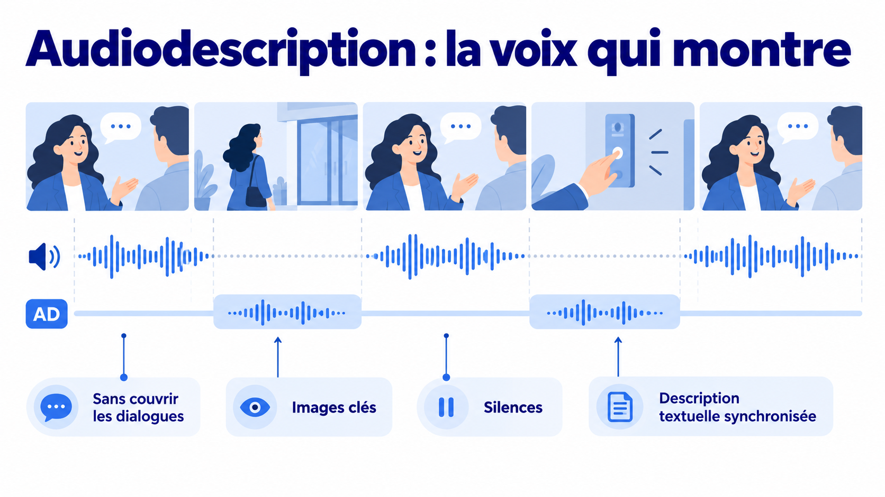
Audiodescription : la voix qui montre
3. points de contrôle rapides | 11. Audiodescription
L’audiodescription ajoute une voix off qui décrit les images clés pendant les silences.
Ce qu’il faut vérifier :
- La vidéo propose une piste audiodécrite activable (bouton AD)
- L’audiodescription décrit les éléments visuels essentiels à la compréhension
- Elle s’intercale dans les silences, sans couvrir les dialogues
- Pour une vidéo sans dialogue essentiel : une description textuelle synchronisée suffit
Quand l’image porte l’information, elle doit aussi être disponible autrement que par la vue.
>
> Principe d’accessibilité vidéo
Démo : montrer 30 secondes d’un film d’animation sans dialogue, puis avec audiodescription. Le contraste est saisissant. Exception pratique : si la vidéo est entièrement commentée en voix off (ex. reportage narré), l’audiodescription est souvent superflue - tout est déjà dit.
Slide 23 - Bonus médias : toujours 2 accès
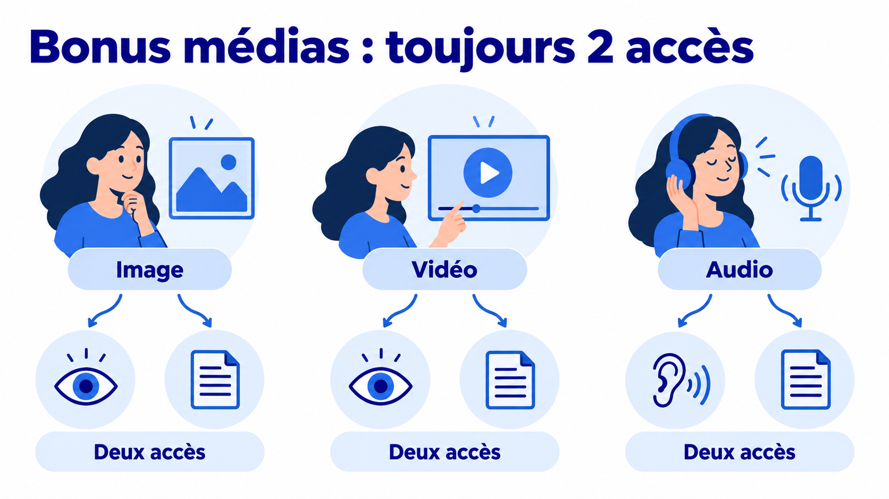
Bonus médias : toujours 2 accès
3. points de contrôle rapides | Bonus médias
Règle d'or : un média en ligne doit rester compréhensible par au moins deux chemins : voir, lire ou écouter.
Le réflexe
- Image, schéma ou plan -> description ou texte alternatif
- Vidéo -> sous-titres + informations visuelles essentielles
- Audio ou podcast -> transcription visible et relue
Les pièges à repérer
- Sous-titres lisibles : contraste fort, bandeau si besoin
- Format réseau social : sous-titres non masqués par l'interface
- PDF : texte sélectionnable, pas une image scannée
Positionner cette slide comme une synthèse, pas comme un nouveau critère. Elle relie les contrôles déjà vus : alternatives textuelles, sous-titres, transcription et audiodescription. Question à poser au groupe : si je coupe le son, si je ne vois pas l'image, ou si le PDF est scanné, est-ce que l'information reste accessible ?
Slide 24 - Bonus médias : Audio-description et transcription
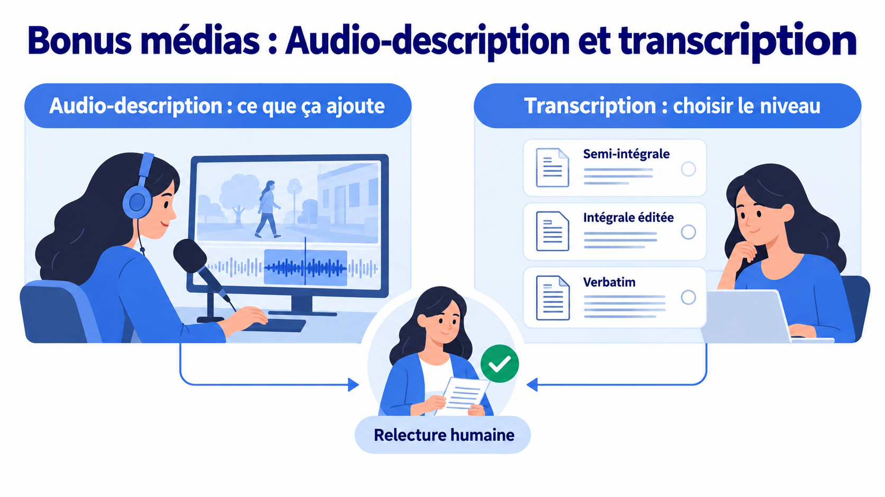
Bonus médias : Audio-description et transcription
3. points de contrôle rapides | Bonus médias
Image et son : proposer un autre accès à toute information utile.
Audio-description : ce que ça ajoute
- Décors, lieux et changements de scène utiles
- Actions, gestes et expressions qui ne s’entendent pas
- Textes et informations importantes affichés à l’écran
- Une voix placée dans les silences, sans couvrir les dialogues
Transcription : choisir le niveau
- Semi-intégrale : résumé détaillé + citations
- Intégrale éditée : texte complet, corrigé et lisible
- Verbatim : mot à mot, hésitations et sons inclus
IA utile pour brouillonner. Publication seulement après relecture humaine.
L’audio-description rend accessibles les informations visuelles essentielles : lieux, actions, gestes, expressions et textes affichés. Elle s’insère dans les silences sans couvrir les dialogues ni les sons utiles. Pour la transcription, faire choisir le niveau adapté à l’usage : semi-intégrale pour restituer l’essentiel, intégrale éditée pour une lecture complète et fluide, verbatim lorsqu’une restitution mot à mot est nécessaire. Un outil d’IA peut produire un premier jet, mais la publication exige une relecture humaine.
Slide 25 - Étiquettes : chaque champ a un nom
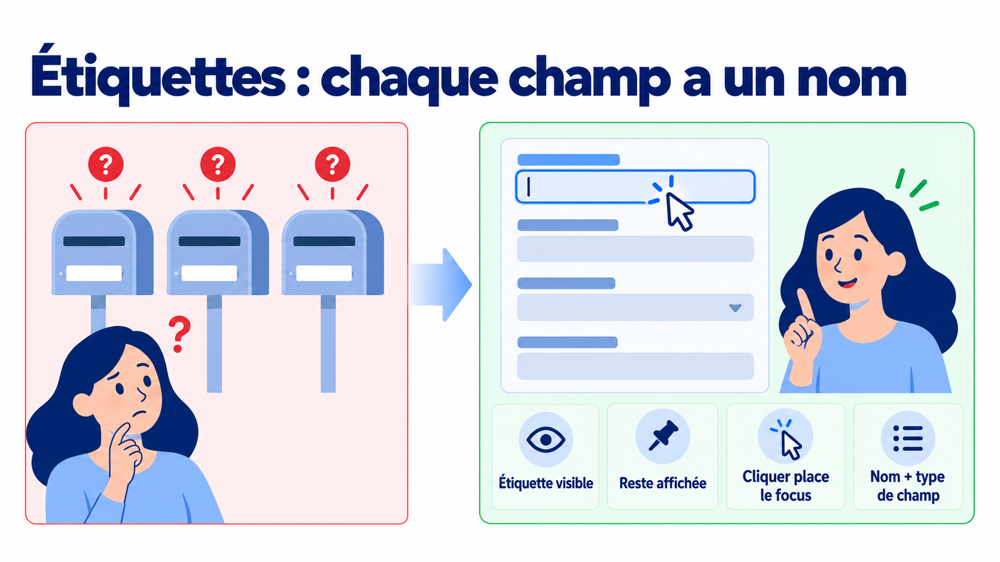
Étiquettes : chaque champ a un nom
3. points de contrôle rapides | 12. Étiquettes de formulaire
Sans étiquette, un champ est comme une boîte aux lettres sans nom - on ne sait pas ce qu’on glisse dedans.
Ce qu’il faut vérifier :
- Chaque champ (texte, case, menu déroulant) a une étiquette visible à côté
- L’étiquette reste affichée quand on commence à saisir - elle ne disparaît pas
- Cliquer sur l’étiquette déplace le focus dans le champ (test rapide et décisif)
- Le lecteur d’écran annonce l’étiquette ET le type de champ
Analogie : une rue d’immeubles où les boîtes aux lettres n’ont aucun nom - impossible de distribuer. Test décisif : cliquer sur le TEXTE de l’étiquette. Si le curseur saute dans le champ, c’est bien balisé. Sinon, l’association est cassée - même si visuellement ça semble OK.
Slide 26 - Placeholder ≠ étiquette
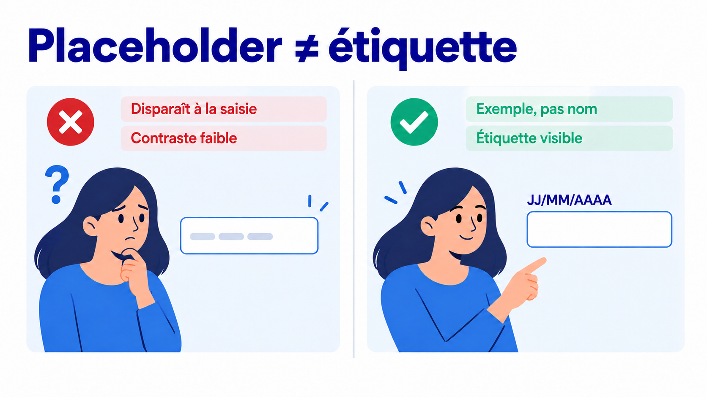
Placeholder ≠ étiquette
3. points de contrôle rapides | 12. Étiquettes de formulaire
Pourquoi le placeholder ne remplace pas l’étiquette :
- Il disparaît dès qu’on commence à saisir - on oublie ce qu’on remplit
- Son contraste est souvent trop faible pour passer le check 4
- Il peut être annoncé comme exemple, pas comme nom fiable du champ
- Il devient difficile d’y revenir dès que la saisie commence
Pattern recommandé
- Étiquette visible au-dessus du champ (ou à gauche)
- Placeholder optionnel, pour donner un exemple de format : « JJ/MM/AAAA »
- Ne pas mettre l’information essentielle uniquement dans le placeholder
Démo : formulaire courant (type CAF, impots.gouv) avec labels floating - zoomer à 200 % et montrer que l’étiquette disparaît derrière le texte saisi. Règle pragmatique : si on doit choisir entre joli et utilisable, on choisit utilisable. Les labels au-dessus du champ sont plus hauts mais clairs pour tous.
Slide 27 - Groupes de champs : l’étiquette commune
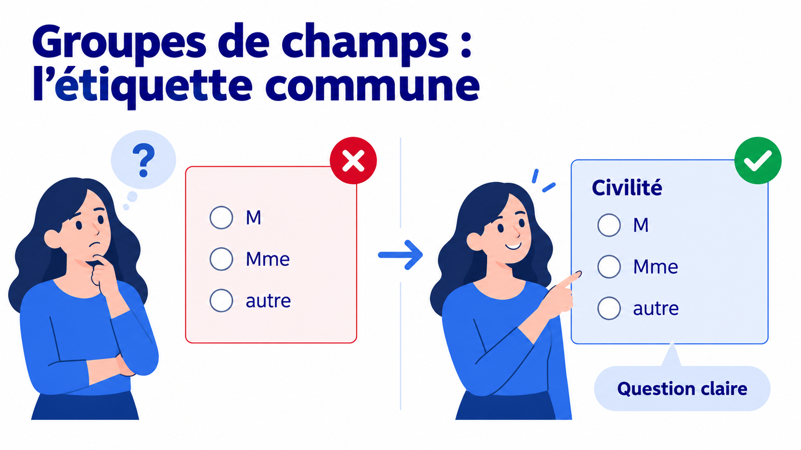
Groupes de champs : l’étiquette commune
3. points de contrôle rapides | 12. Étiquettes de formulaire
Quand regrouper :
- Plusieurs boutons radio qui répondent à la même question (« Civilité : M / Mme / autre »)
- Plusieurs cases à cocher qui partagent un thème (« Jours travaillés »)
- Adresse découpée en plusieurs champs (n°, rue, code postal, ville)
| Cas | Code vérifié | Verdict lecteur d’écran |
|---|---|---|
| 3 radios « Civilité » sans regroupement | Chaque radio a son label seul | « M, bouton radio » - question perdue |
3 radios dans un <fieldset> avec <legend> | <fieldset><legend>Civilité</legend>… <input type="radio">… | « Civilité, M, bouton radio » - question claire |
Analogie : sans <fieldset>/<legend>, les radios sont comme des enfants sans nom de famille - on les entend, on ne sait pas à quelle question ils répondent. Côté visuel : le fieldset se traduit souvent par une bordure ou un titre de section - le design peut l’habiller, il ne doit pas le supprimer.
Slide 28 - Champs obligatoires : prévenir puis guider
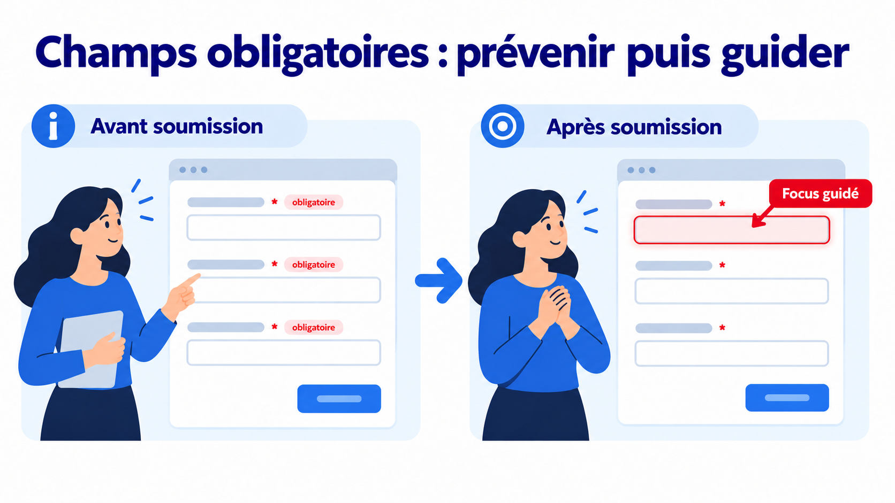
Champs obligatoires : prévenir puis guider
3. points de contrôle rapides | 13. Champs obligatoires et erreurs
Test #13 = avant envoi + après soumission vide : l'obligation prévient, l'erreur guide.
Avant soumission
- Obligation écrite : « obligatoire » ou règle « tous sauf téléphone »
- Astérisque expliqué s'il est utilisé
- Attribut
requiredouaria-required="true"présent
Après soumission
- Aucune erreur ne doit apparaître avant l'envoi
- Message précis relié au champ, avec
aria-invalidsi erreur - Focus vers le récapitulatif ou le premier champ en erreur
Règle d'or : le contrôle 13 ne commence pas par les erreurs. D'abord, vérifier que l'obligation est comprise avant l'envoi. Ensuite, soumettre volontairement un formulaire vide : le message doit nommer le champ, être relié au champ et guider le focus. Message à éviter : « Erreur champ 3 ». Préférer : « L'adresse électronique doit respecter le format nom@domaine.fr ».
Slide 29 - Ce qu’on remonte dans la grille
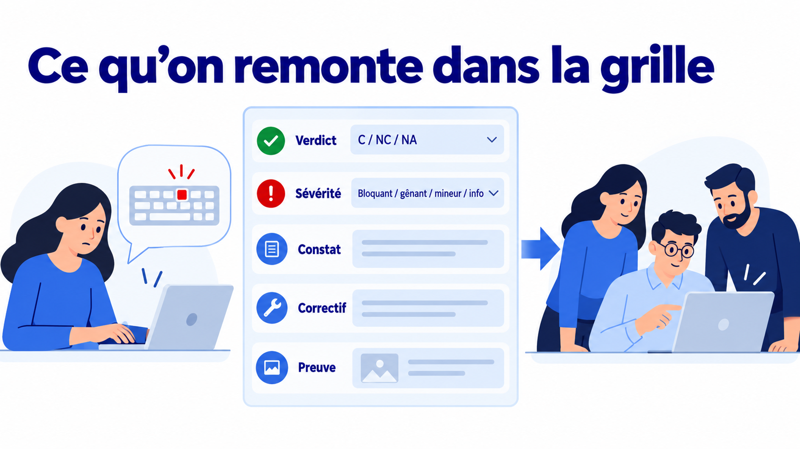
Ce qu’on remonte dans la grille
3. points de contrôle rapides | Grille d’audit
| Champ | Ce qu’il faut écrire | Exemple court |
|---|---|---|
| Verdict | C, NC ou NA | NC |
| Sévérité | Bloquant, gênant, mineur ou info | Gênant |
| Constat | Ce que vous observez concrètement | Le lien d’évitement n’apparaît pas au focus. |
| Correctif | Ce que l’équipe doit corriger | Rendre le lien visible et cibler #contenu. |
| Preuve | URL, capture, sélecteur ou extrait | /actualites - premier appui sur Tab |
Règle de travail
- Un défaut sans preuve est difficile à traiter.
- Une preuve sans sévérité est difficile à prioriser.
Faire ouvrir 03-easy-checks/grille-audit-easy-checks.xlsx. Expliquer que l’objectif n’est pas seulement de dire « ça passe » ou « ça échoue ». Une remontée utile doit permettre à l’équipe web de comprendre le problème, mesurer l’impact, retrouver l’endroit exact et corriger sans refaire toute l’enquête. Insister sur les quatre niveaux de sévérité : bloquant, gênant, mineur, info.
Slide 30 - Bonus site web : liens et PDF à repérer
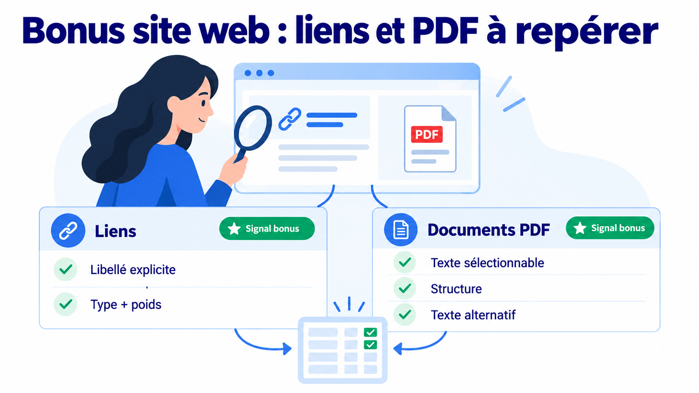
Bonus site web : liens et PDF à repérer
3. points de contrôle rapides | Bonus
Pendant l'audit, ces points ne remplacent pas les 13 checks. Mais si vous les voyez, notez-les : ils améliorent vraiment l'expérience utilisateur.
Liens
- Éviter les pages saturées de liens sans hiérarchie
- Libellé explicite : « programme de l'exposition photo »
- Éviter « cliquez ici », « en savoir plus », « programme » seul
- Téléchargement : indiquer type et poids du fichier
Documents PDF
- Texte sélectionnable : pas de PDF image ou scanné non navigable
- Structure : titres, sommaire et liens internes si le document est long
- Images avec texte alternatif
- Si possible : proposer aussi un format éditable ou OpenDocument
Positionner cette slide comme un bonus volontaire, pas comme un 14e et 15e point de contrôle. Pour les liens, rappeler le principe RGAA : un lien doit être compréhensible seul ou avec son contexte immédiat. La meilleure pratique reste un libellé directement explicite, surtout pour les personnes qui listent les liens avec un lecteur d'écran. Pour les fichiers en téléchargement, citer la logique Opquast : indiquer le format et la taille aide l'utilisateur à décider avant de télécharger. Nuance importante : ne pas transformer l'exercice en audit documentaire complet. Si un PDF pose problème, le noter comme signal bonus dans la grille, puis renvoyer vers les méthodes d'audit PDF ou vers le module Word/PDF.